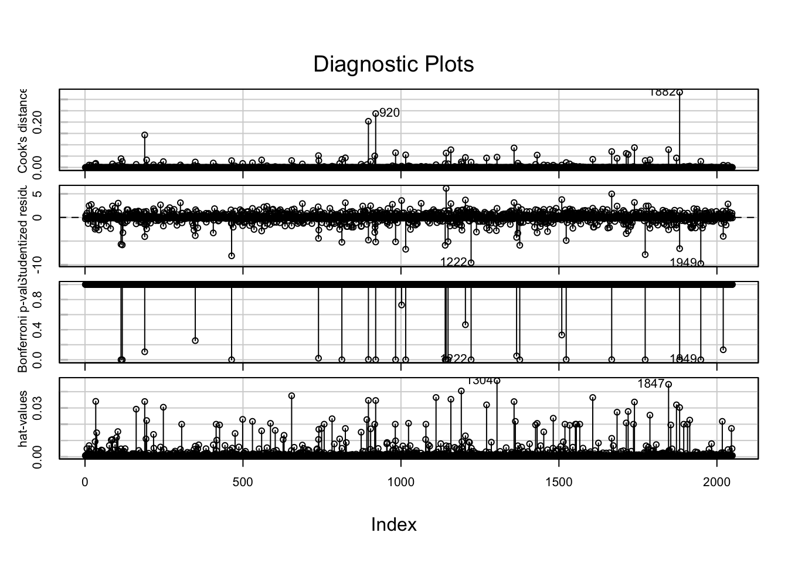

KKH KVWH NMCDH NMDH NMH NMLFH
1381 513 2388 1885 3712 1809
Internet Paper
6054 5634
ENGLISH SPANISH
11561 127
Female Male
7225 4462
Acute
11688
CDH ED DCH ED ED ED MEZZ GL ED KKH ED KVWH ED LF ED
2388 1885 2768 941 903 1381 513 900
NMH ED NMLFH ED
3 6
Commercial Medicaid Medicare Self-pay
6628 1015 3835 210 Predicting Patient Satisfaction for Emergency Department Encounters

Abstract
Patient satisfaction can be an indication of quality care and aid in predicting health outcomes and patient retention. Although subjective, it is crucial for healthcare administrators to understand and meet patients’ expectations, translate it to patient-oriented care within delivery models, and improve population health as a result. This project investigates features associated with higher patient satisfaction scores for ER encounters and developing models to predict them.
Data
This data set is a patient satisfaction survey administered to patients discharged from ten different entities at NMH over the span of two years. Respondents were discharged from six emergency units. Surveys were delivered either on paper or electronically following their encounter. The patient satisfaction surveys collected, range from discharges starting March of 2016 through January of 2018. Responses were given in either English or Spanish. Five types of payers were used for the encounters and satisfaction scores per response were given on a scale of one (very dissatisfied) to five (very satisfied). No other information on how the data was collected is available.
Initial Data Cleaning
Population of Interest
The population of interest is the patient population for emergency encounters at NM with disproportionate social determinants of health.
Exclusion Criteria
A waterfall approach was used to define the population of interest. Social-determinants are environmental and non-health related needs such as socio-economic status, that can be attributed to 30-55% of health outcomes [^1]. Payer type was used as a proxy to define parts of ‘disproportionate’ social-determinants, as financial payers like Medicaid insure low-income individuals. Self-pay and Medicaid payers were also included in the drop-down conditions, since this subset of the target population tend to misuse the ER for non-urgent care - a viable proxy for lower health literacy [^2]. Patterns of ER misuse are also more likely to be younger and of non-hispanic black race, however, the only information available an race was whether or not the patient was white. While sub-setting race to only non-whites would align more with the population of interest, this information was retained to maintain the basis of interpretation and prevent over specification of models in the event race was used. The age at which we thought individuals could best understand and articulate aspects of the emergency department setting was 16 years old. Records younger than that were omitted.
waterfall <- mydata[mydata$disdate!="1900-01-01" & mydata$survey_id!=1418129390,] #erroneous record; clearly incorrect entry
waterfall %<>% filter(age >= 16,
payor %in% c("Medicare","Medicaid","Self-Pay")) #4603
waterfall %<>%
filter(!is.na(er_disch_time)) %>%
filter(!is.na(er_admit_time))
for (i in seq_len(nrow(waterfall))){
if(sum(is.na(waterfall[i,]))>8){
waterfall <- waterfall[-i,]
}
} #4101
for (i in seq_along(ncol((waterfall)))){
if(sum(is.na(waterfall[,i]))/4101>.25){
# print(names(mydata[,i]))
waterfall <- waterfall[,-i]
}
}
# } #44 variable removed A87 / D2 / D52 = 4099 obs of 45 var
waterfall %<>% mutate(across(where(is.numeric), ~ ifelse(is.na(.), mean(., na.rm = TRUE), .)))
waterfall %<>% mutate(family_friends = (E1+E2+E3)/3,
tests = (D4+D65+D3)/3,
doctors = (C2+C4+C5+C75)/4,
nurses = (B1+B3+B4+B5+B76)/5,
arrival = (A4+A5+A86+C1)/4,
personal_issues = (F1+F2+F41)/3,
insurance = (A2+A3+A28)/3,
overall = (E1+E2+E3+D4+D65+C1+C2+C4+C5+C75+B1+B3+B4+B5+B76+A4+A5+A86+F1+F2+F41+A2+A3+A28)/25)
# additional variables will most likely remove due to multicollinearity
waterfall %<>% mutate(response_time = recdate - disdate, .before = distrib) # length of time b/w disch and receiving survey
waterfall %<>% filter(response_time>=0) # filter out retroactive response times
dim(waterfall) # final sample 2875 observations of 51 variables[1] 2875 54After cleaning records and additional formatting, observations were then cleaned. Survey ID 1418129390 had missing admit and discharge times and the encounter record for the survey was dated 1900-01-01. The implied erroneous record was removed.
To maintain the integrity of the data set, observations with missing discharge or admit times were removed.
Observations were subset to those over the age of 16 who were Medicare, Medicaid, or Self-Pay users to isolate the patient population. No demographic attributes were missing in the rest of the survey data.
Respondents were asked to survey their satisfaction across different care settings across their encounter. The likert scale of possible responses were 1-5.
For the non-demographic survey questions, there were a number of questions with missing answers. Survey respondents that had greater than 30% of answers missing were removed from the drop down conditions. Subsequently, survey questions across the sample that had more than 30% of answers missing were also omitted. The questions removed were:
A87 (Arrival) - Helpfulness of person who first asked you about your condition D2 (Tests) - Courtesy of the person who took your blood D52 (Tests) - Concern shown for your comfort when your blood was drawn
A new variable was created to measure the length of time between discharge date and the date the survey was received. Survey IDs with negative response times were present, implying that they received the survey before being admitted to the ER. These records were concluded as an error and were also ommitted.
Surveyors labeled responses based on the following attributes of the patient encounter: Arrival, Personal/Insurance Info, Nurses, Doctors, Tests, Family or Friends, Personal Issues.
For any missing responses afterwards, the missing values were replaced with the average satisfaction score for that question.
Model Validation Setup
set.seed(555)
# 70/30 test split
waterfall %<>% mutate(valid = runif(survey_id,0,1))
train <- waterfall %>%
filter(valid <= .7)
test <- waterfall %>%
filter(valid > .7)
dim(train)[1] 2049 55dim(test)[1] 826 55Methods
A regression model was selected to predict the overall patient satisfaction variable, F68, and used to estimate the true population relationship. A 70/30 train:test ratio was used for model validation. Regression assumptions were then validated. For residual normality and increased model accuracy, explanatory variables were transformed before model fitting. The sampling distribution forms a left-skew distribution, in which the square root and natural log transformations were applied.

Observing that the root transformation had the greatest shift to normality, it was applied to all explanatory variables. Additional summary variables based on category were calculated to obtain better predictive variables. The new summary variables were the mean averages for each category.
Pearson’s product correlation matrix was used for variable selection; starting with the highest coefficient of determination, a regression model was fit in progressive steps with one or two variables at a time. At each step, a combination of diagnostic tests and empirical thresholds were used to assess goodness-of-fit based on the following criteria:
\[ Δ R^2 = R_f^2 - R_n^2 > .2 \]
Where the additional variable must increase the coefficient of determination by 2% in order for the variable to be retained.
Turkey’s Nonadditive Test was used to asses presence of interaction. In the context of regression, fitted values squared are computed post-hoc as a quadratic function to test if the interaction term is significantly different from zero, assuming H0: ŷ = 0 and a linear function is modeled with Ha: ŷ ≠ 0 and a non-linear function is modeled:
\[\hat{f_n} = (β_1)\hat{x_1} + (β_2)\hat{x_2}+ (β_3)\hat{x_3}...+(\hat{y_n})^2\hat{x_z}\]
\[\hat{y_n} = (β_1)\hat{x_1} + (β_2)\hat{x_2}...+(β_z)\hat{x_z}\]
where ŷf are the full predicted values and ŷn are the nested predicted values, variables were retained if P(F) < .05.
Difference in fits was used to measure the influence of individual observations obtained using an empirical threshold of \({\small √(p)/n}\); where p is the number of parameters and n is the number of observations
Cook’s distance uses leverage and studentized residuals to measure significance of observation on overall model; threshold of 4/n was considered to be practically influential and was further evaluated
Wald Statistic: {\(β^2/Var(β)\)} measures the effect size of individual parameters.Variance Inflation Factors greater than four were reevaluated; greater than seven are removed.
The model yielding the optimal Δ R2 and least RMSE was used as the production model. The questions used to guide the final model were:
- Does the model capture the true population parameters and relationship? Can the model be used to draw generalizations from our target population?
- Is the model an accurate predictor of patient satisfaction?
The results of the diagnostic post-hoc tests were then used to assess the models capability to generalize to the target population and decide if a different model would be more equipped to capture the relationships found in survey responses to overall patient satisfaction in ER encounters for those with low social determinants of health. In practice, it is acknowledged that no generalizations can accurately be made on our target population due to the limited information around how the data was collected. It is unknown if the observations were from a random sample, which is sufficient and necessary to make any population conclusions. Any aforementioned hypothesis to the population is for the sake of statistical inference and this endeavor. However, to validate prediction capabilities, a precision grade was used on our test set.
#original model validation setup
set.seed(555)
# 70/30 test split
waterfall %<>% mutate(valid = runif(survey_id,0,1))
train <- waterfall %>%
filter(valid <= .7)
test <- waterfall %>%
filter(valid > .7)
dim(train)[1] 2049 55dim(test)[1] 826 55Data Analysis
Pearson’s product correlation plot showed that overall satisfaction was strongly correlated with how well patients were informed about delays and other responses based on either doctors’ or nurses’ care setting.
| Variable | Correlation | Category | Question |
|---|---|---|---|
| F2 | 0.796 | Personal Issues | How well you were kept informed about delays |
| B3 | 0.734 | Nurses | Nurses’ attention to your needs |
| B4 | 0.733 | Nurses | Nurses’ concern to keep you informed about your treatment |
| C4 | 0.727 | Nurses | Doctor’s concern for your comfort while treating you |
| C2 | 0.674 | Doctors | Courtesy of the doctor |
| B5 | 0.655 | Doctors | Nurses’ concern for your privacy |
| C1 | 0.629 | Doctors | Waiting time in the treatment area, before you were seen by a doctor |
F2 was therefore used as the initial parameter. Other parameters were added in a ‘stepwise’ manner while assessing the change in R2 and MSE. Since variables in the same category, specifically nurses and doctors, had high underlying collinearity, summary parameters were used which were the means of the highest two or total responses per group. This is preferable since 1) information can be easily summarized into one parameter instead of multiple, increasing the simplicity of our model and 2) missing responses are a characteristic of survey data and limiting the model to individual parameters can lead to inaccuracy for future data sets that have large proportions of missing responses to individual questions.
# root transformation
# train %<>%
# mutate(across(c(16:39,41,42,43), ~ sqrt(.), .names = "{col}_rt"), .before = family_friends)
train %<>%
mutate(across(c(16:46), ~ sqrt(.), .names = "{col}_rt"), .before = family_friends)
train %<>%
mutate(arrival_2 = (A5_rt+C1_rt)/2, doctors_2 = (C4_rt+C75_rt)/2,
family_friends_2 = (E1_rt+E3_rt)/2, nurses_2 = (B4_rt+B3_rt)/2,
personal_issues_2 = (F2_rt+F41_rt)/2, test_2 = (D3_rt+D4_rt)/2) #averages post-trans
train %<>%
mutate(arrival_3 = (A5_rt+C1_rt+A86_rt)/3, doctors_3 = (C4_rt+C75_rt+C5_rt)/3,
family_friends_3 = (E1_rt+E2_rt+E3_rt)/3, nurses_3 = (B4_rt+B3_rt+B76_rt)/3,
personal_issues_3 = (F2_rt+F41_rt+F1_rt)/3, test_3 = (D3_rt+D4_rt+D65_rt)/3) #averages post-trans
train %<>% mutate(C75_7_rt = (C75_rt+C7_rt)/2)Results
The final regression is modeled by
\[ f(x) = -2.96537 + 1.52659*x_1 + 1.14899*x_2 + 0.90659*x_3 \] \[ MSE = .19 \]
where β1 describes change in for a one unit change in the root mean satisfaction for the personal issues category, β2 for a one unit change in the root mean satisfaction for the nurses category, and β3 for a one unit change in the root indicator for Doctor’s concern for patients comfort while treating them. Interpretations for β0 is omitted due to transformations and range of the data set. The Adjusted R2 ~ .74, F(3,2045), p = 2.2e10 using adjusted Type I error rate = .005.
If the data was obtained via random sampling, the model could be used as an estimate for the true target population’s overall satisfaction. Our model produced a MSE = .19 (RMSE = .44) with statistically significant results for all predictors.
model <- lm(F68~personal_issues_3+nurses_3+C4_rt, data = train)
anova(model) # RMSE = .0.4358899Analysis of Variance Table
Response: F68
Df Sum Sq Mean Sq F value Pr(>F)
personal_issues_3 1 952.03 952.03 5062.99 < 2.2e-16 ***
nurses_3 1 79.94 79.94 425.11 < 2.2e-16 ***
C4_rt 1 40.25 40.25 214.04 < 2.2e-16 ***
Residuals 2045 384.54 0.19
---
Signif. codes: 0 '***' 0.001 '**' 0.01 '*' 0.05 '.' 0.1 ' ' 1Residual plots were used to test residual normality and linearity with P(F) = .57 on one degree of freedom for Tukey’s test for non-additivity. Residual values lie within three standard deviations with a few minor exceptions in the fitted values, prompting an opportunity for different optimization methods. The apparent uncaptured variation between the predictor variables calls for models suited for continuous ordinal data such as logistic, poisson, or generalized linear models that can capture different types of distributions.
residualPlots(model) Test stat Pr(>|Test stat|)
personal_issues_3 -1.2853 0.1988
nurses_3 1.4115 0.1583
C4_rt 0.0725 0.9422
Tukey test 0.5631 0.5734influenceIndexPlot(model)
mydata %>%
filter(survey_id %in% c(1344260683,1439794901)) survey_id client_short_nm recdate disdate er_admit_time er_disch_time
1 1344260683 NMLFH 2017-06-30 2017-06-30 2017-06-30 2017-06-30
2 1439794901 NMLFH 2017-11-29 2017-11-27 2017-11-27 2017-11-27
distrib language age sex race_white specialty unit payor A4 A5 A86
1 Internet ENGLISH 82 Male 1 Acute LF ED Medicare 3 2 4
2 Internet ENGLISH 37 Female 0 Acute LF ED Medicaid 5 5 5
A87 A2 A3 A28 B1 B3 B4 B5 B76 C1 C2 C4 C5 C75 C7 D2 D3 D4 D52 D65 E1 E2 E3 F4
1 4 2 2 3 4 3 1 3 3 3 2 1 1 1 NA 4 3 3 3 1 2 1 1 1
2 5 5 5 5 5 5 5 5 5 5 1 1 1 1 5 5 5 5 5 5 5 5 5 1
F68 F1 F2 F41
1 1 NA NA NA
2 1 5 5 1mydata[mydata$survey_id==1344260683,] survey_id client_short_nm recdate disdate er_admit_time
5194 1344260683 NMLFH 2017-06-30 2017-06-30 2017-06-30
er_disch_time distrib language age sex race_white specialty unit
5194 2017-06-30 Internet ENGLISH 82 Male 1 Acute LF ED
payor A4 A5 A86 A87 A2 A3 A28 B1 B3 B4 B5 B76 C1 C2 C4 C5 C75 C7 D2 D3
5194 Medicare 3 2 4 4 2 2 3 4 3 1 3 3 3 2 1 1 1 NA 4 3
D4 D52 D65 E1 E2 E3 F4 F68 F1 F2 F41
5194 3 3 1 2 1 1 1 1 NA NA NA4/dim(train)[1][1] 0.001952172Survey IDs 1344260683 and 1439794901 had the highest influence on the overall model in comparison to the global average of Cook’s distance. Looking at the original data, the former had missing responses for four of the seven questions used to produce the model, highlighting a major flaw in this model - its predictive inaccuracy for patients with missing responses - as missing responses were filled with grand means after exclusion criteria were applied. Although missing at random, a better approach would be to fill in with median values or apply more conservative exclusion factors such as omitting observations with greater than 10% of responses missing. The latter was greatly considered, but the trade-off of small sample sizes and subsequent over fitting were outweighed.
After confirming the absence of variance inflation, the Log Likelihood ratio test was done for the nested model excluding x3, as this was the only non-summary predictor. Wald statistics are limited for linear models such that P(Wald) > P(LRT). Assuming null hypothesis is true where the nested model is just as adequate as the full model, p(χ) = 8.3e-45 (204,2) the affect of x3 on the model is statistically significant.
modelx <- lm(F68~personal_issues_3+nurses_3, data = train)
-2*(logLik(modelx)-logLik(model))'log Lik.' 203.9595 (df=4)pchisq(203,2,lower.tail = FALSE)[1] 8.300611e-45